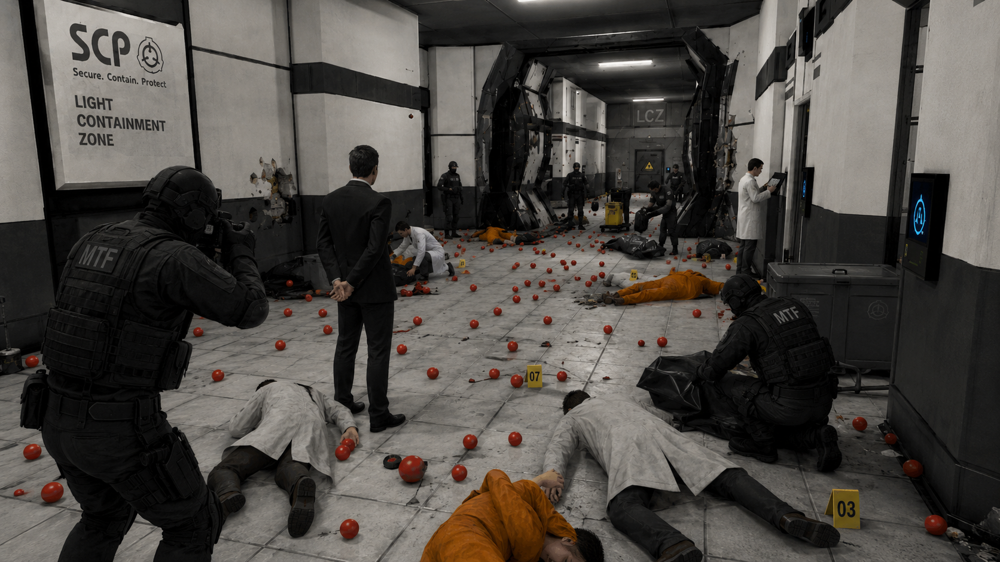

The individual, identified in several partially redacted documents only as Deputy Ballistics Officer Prin█er, had previously been granted the honorary title "Owner of the Balls" after approximately 500 instances of SCP-018 were released throughout the facility.
That title has now been revoked. Site management has also confirmed that the individual has been reduced by one staff grade, effective immediately.
The review began shortly after recovery teams finished removing the remaining SCP-018 instances from ventilation shafts, elevators, containment chambers, staff lockers, and one soup container in the cafeteria.

Investigators examined security recordings, facility control logs, damaged doors, medical reports, surviving balls, and more than 40 pages of testimony from personnel who were able to stop laughing long enough to sign a statement.
While the release of SCP-018 remained the central issue, the investigation reportedly expanded after several unrelated complaints were attached to the same personnel file.
Inventory records recovered during the review show no unusual activity until 20.08.2026, at which point the number of bouncy balls recorded inside the facility briefly reached 500.
- Unauthorized anomalous deployment: approximately 500 instances of SCP-018 released into active facility corridors.
- Failure to contain resulting hazards: multiple fatalities, extensive property damage, and at least one staff disappearance.
- Improper use of facility controls: details remain classified pending a review of who authorized access to that button in the first place.
- Misuse of facility office equipment: exact nature redacted from the public report.
- Break-room misconduct: one carton of milk spilled and left unattended for an estimated 11 minutes.
- Failure to report said milk: discovered independently by a member of janitorial staff.
- Pizza-related negligence: the final slice was removed from a staff box without the empty box being discarded.
The final hearing was held behind closed doors earlier this week. No official transcript has been released, although personnel stationed outside the room reported hearing several raised voices, the phrase "five hundred was not an acceptable amount", and a lengthy argument concerning whether the spilled milk should count as a separate offence.
Facility Manager A. R. Korat later issued a short statement on the matter:
"The investigation found that the balls were only the beginning. There was also the milk."
Site management confirmed this morning that the staff member has been formally demoted and is no longer permitted to use the title "Owner of the Balls" in official correspondence, incident reports, staff meetings, or pizza orders.
The honorary title has been placed in storage pending a determination on whether the facility should ever have honorary titles again.
Officials declined to disclose the full disciplinary package. Confirmed measures include reduced facility control privileges, mandatory inventory duties, temporary restrictions involving anomalous recreational objects, and several additional corrective measures described only as "necessary."
When asked whether further punishment was expected, a senior official stated that the matter was "not entirely finished" before declining to elaborate.
The demoted staff member has since returned to limited duties under supervision. Staff have been instructed not to provide them with SCP-018, bulk milk, unsecured office equipment, or anything described by its manufacturer as "highly bouncy."
A facility-wide review of anomalous item spawning permissions is ongoing.
Three members of MTF have been placed on administrative leave after attempting to expense a pizza cutter as "breach response equipment."
The request remains under review.